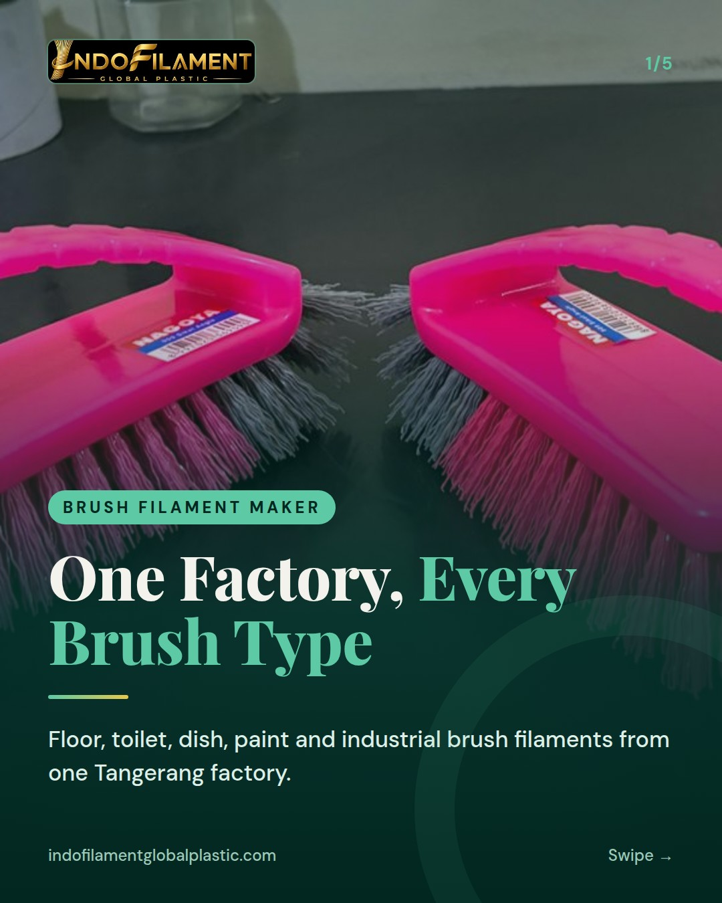
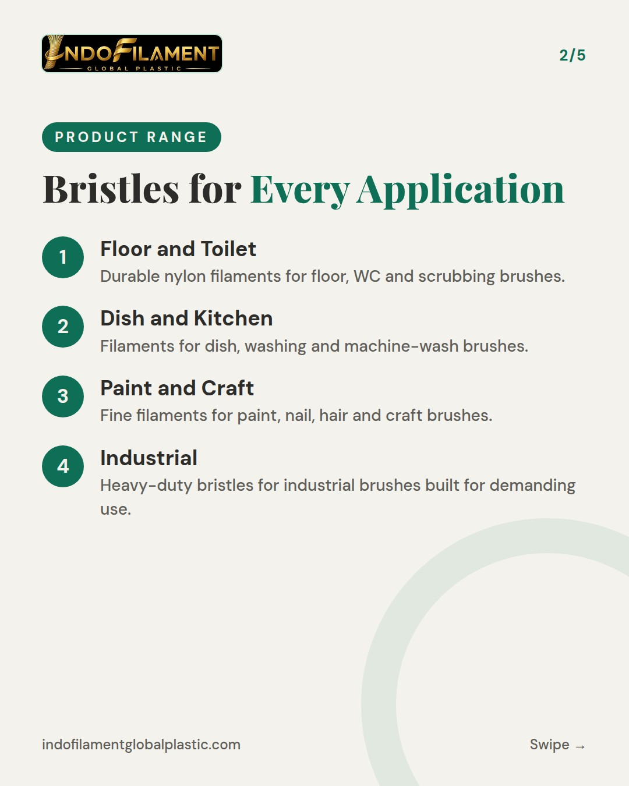
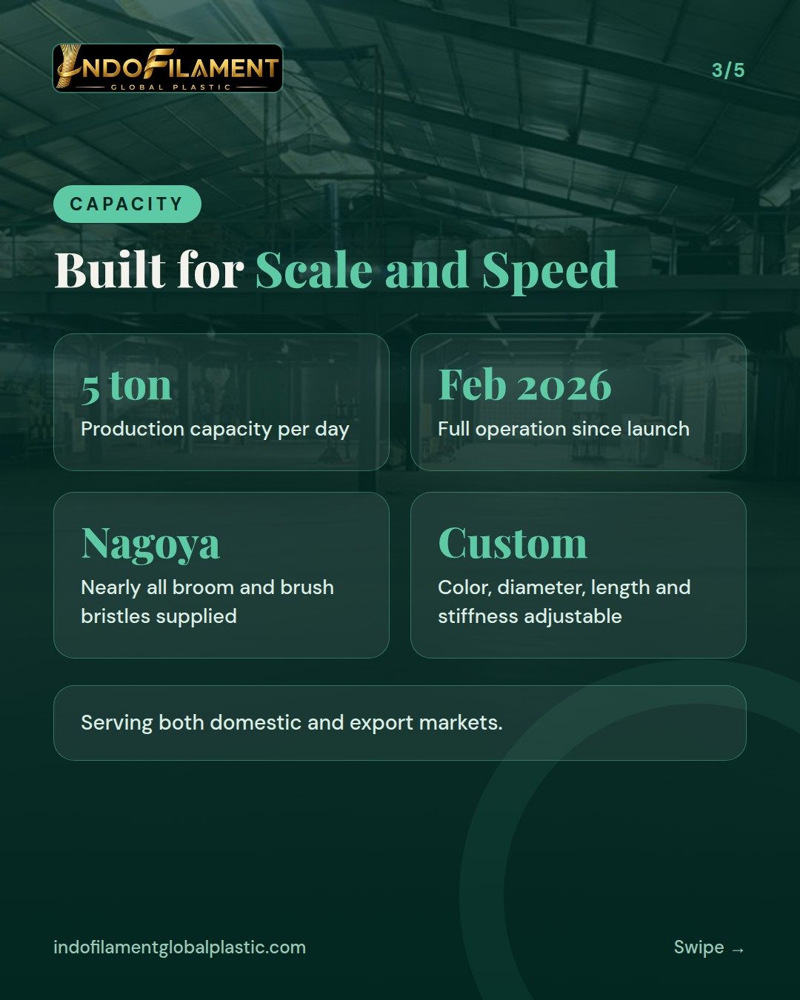
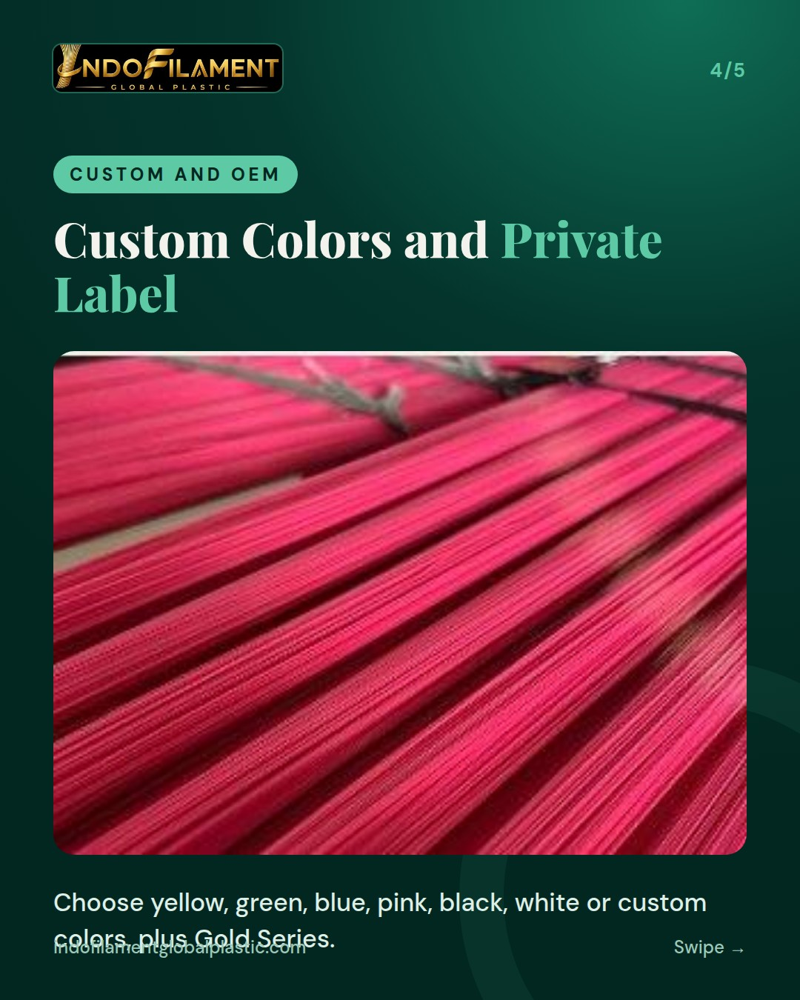
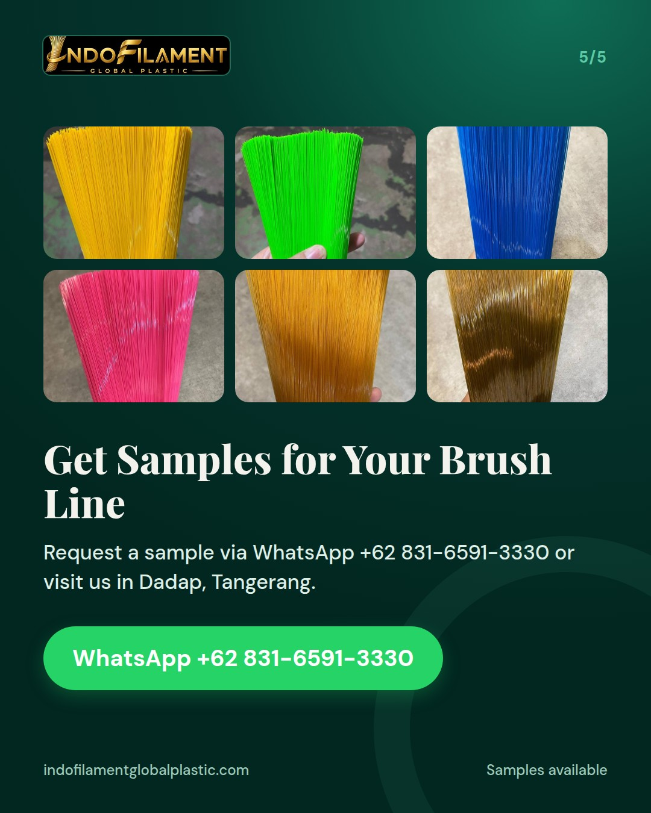

Satu pabrik, banyak jenis sikat: lantai, WC, piring, cuci, kuas cat, industri





One factory, every brush type. 🪥✨ From floor and toilet brushes to dish, washing, paint, nail and industrial brushes, we produce nylon filaments for the full range of brush makers. Our nylon filaments are made from recycled plastic raw materials, so you get a more sustainable bristle without compromising performance. What we offer: • Filaments for floor, WC, dish, washing and machine-wash brushes • Fine filaments for paint, nail, hair and craft brushes • Heavy-duty bristles for industrial brushes • Custom and OEM filaments, plus private label programs • Gold Series finishes: Bright Gold and Copper Gold • Custom colors, diameter, length and stiffness Since February 2026 we have been in full operation with modern filament machines and a capacity of up to 5 tons per day, serving domestic and export markets. Ready to find the right filament for your brush line? Request a sample via WhatsApp +62 831-6591-3330 or DM us. You are also welcome to visit our factory at Jl. Perancis No.79, Dadap, Tangerang. #brushfilament #broomfilament #nylonfilament #brushmanufacturer #broommanufacturer #madeinindonesia #privatelabel #OEM #goldseries #sustainablemanufacturing